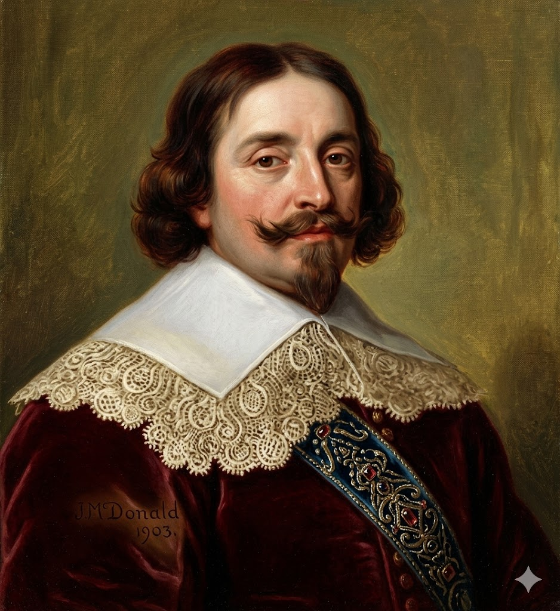

אבל טסמן
המגלה של ניו זילנד וטסמניה | אימפריית הסחר ההולנדית (VOC)

לחץ על התמונה להגדלה
Portrait of Abel Tasman | Source: Wikimedia Commons / National Archives NL
ניתוח אטימולוגי של השם המלא
שם פרטי: אבל (Abel)
השם "אבל" מקורו בשם העברי המקראי הֶבֶל (בנו השני של אדם וחוה).
מקור בלשני ומשמעות: משמעות המילה בעברית היא "נשימה", "אד", או דבר חולף וזמני (כמו בביטוי "הבל הבלים"). השם אומץ באירופה הנוצרית והפך לנפוץ במיוחד בארצות השפלה (הולנד) במהלך הרפורמציה הפרוטסטנטית שחיפשה שמות תנ"כיים אותנטיים.
משמעות סמלית: עבור יורד ים באוקיינוסים המסוכנים ביותר בעולם, השם נושא משמעות מצמררת על ארעיות החיים. כמו הבל המקראי שחייו נגדעו באלימות, גם טסמן איבד רבים מאנשיו באלימות פתאומית במסעותיו, וחיי המלחים שלו היו תלויים על בלימה – כנשימה חולפת בסערה.
שם משפחה: טסמן (Tasman)
זהו שם משפחה פריזי/הולנדי אזורי.
מקור בלשני: השם מורכב מהמילה Tas (תיק, שק או ארנק) והמילה man (איש). המשמעות ההיסטורית המקובלת היא שמדובר בשם מקצועי המעיד על אב-קדמון שהיה יצרן תיקים, נושא כספים, או גובה מס ("איש הארנק").
אירוניה היסטורית: "איש הארנק" (Tasman) נשלח על ידי תאגיד כלכלי ענק (ה-VOC) כדי למלא את "הארנק" הלאומי בזהב ותבלינים. למרבה האירוניה, טסמן גילה שטחי אדמה עצומים (טסמניה וניו זילנד), אך מכיוון שלא מצא בהם סחורות רווחיות, החברה ששלחה אותו ראתה במסעותיו כישלון כלכלי צורב, והארנק נותר ריק.
ילדות ורקע מוקדם: מהכפר הפריזי ללב האוקיינוס
אבל יאנסזון טסמן נולד בשנת 1603 בכפר הקטן לוטיחסט (Lutjegast) שבמחוז חרונינגן, בצפון הולנד.
רקע מעמדי
כמו וילם יאנסזון לפניו, טסמן לא הגיע ממשפחת אצולה. הוא נולד למעמד העובד הפריזי. באותן שנים, "תור הזהב ההולנדי" היה בתחילתו, והים היה הדרך היחידה של אדם עני לטפס בסולם החברתי והכלכלי.ההצטרפות ל-VOC
בגיל צעיר עבר לאמסטרדם, ובשנת 1633 הצטרף לחברת הודו המזרחית ההולנדית (VOC), שהייתה תאגיד הסחר הגדול והחזק בעולם. הוא החל את דרכו כמלח פשוט וטיפס במהירות בסולם הדרגות בזכות כישורי הניווט שלו, עד שהפך לקברניט (Schipper). הוא הוכיח את עצמו במשימות קשות נגד מבריחים ופיראטים באזור אינדונזיה ויפן.אידאולוגיה ומניעים: התאגיד לפני הכל
המסעות של טסמן לא היו יוזמה אישית שלו, אלא משימות קבלניות מוגדרות מראש שנועדו לשרת את בעלי המניות של תאגיד ה-VOC.
המסע הראשון (1642-1643): 10 חודשים של אימה, קור וגילויים
המסע הראשון של טסמן הוא אחד ממסעות הניווט הנועזים והמפחידים ביותר בהיסטוריה של עידן התגליות. הוא נמשך 10 חודשים רצופים (מאוגוסט 1642 עד יוני 1643), שבהם הצוות גמא אלפי קילומטרים במים שלא מופו מעולם. טסמן יצא מבטאוויה (ג'קרטה) עם שתי ספינות קטנות בלבד: Heemskerck (ספינת הדגל) ו-Zeehaen (ספינת משא קטנה). הצוות מנה כ-110 איש בסך הכל.
השלב הראשון: צלילה ל"ארבעים השואגים" (אוגוסט-נובמבר 1642)
לאחר תחנת ביניים באי מאוריציוס, טסמן קיבל החלטה נועזת: הוא הפליג עמוק דרומה, אל קווי הרוחב 40-50 דרום, כדי לתפוס את הרוחות המערביות העזות.
החוויה הפיזית והנפשית: המלחים ההולנדים, שהיו רגילים לאקלים הטרופי של אינדונזיה, מצאו את עצמם בתוך גיהנום קפוא. גלים בגובה של בניינים טלטלו את הספינות הקטנות. ערפל כבד, גשם קפוא וברד היכו בהם ללא רחם. הצוות סבל מקור עז, תשישות, והפחד הפסיכולוגי החמור ביותר: הפחד שהם שטים אל קצה העולם או אל חומת קרח שתשבור את הספינות. טסמן נאלץ לסטות מעט צפונה כדי שהספינות לא יתרסקו מהסערות.
טסמניה - אשליית ה"ענקים" (24 בנובמבר 1642)
ההימור של טסמן השתלם כשהוא הבחין ביבשה. הוא קרא לה "ארץ אנטוני ואן דימן" (טסמניה של היום).
החוויה על החוף: הים היה כה סוער שלקח להם ימים להצליח להוריד סירה לחוף. כשהנגר של הספינה שחה לחוף כדי לנעוץ את הדגל ההולנדי, החוויה הייתה מצמררת. הצוות שמע קולות עמומים מהיער, אך לא ראה איש (האבוריג'ינים המקומיים התחבאו). המלחים מצאו עצים שעליהם נחרתו חריצים לטיפוס, אך החריצים היו במרחק של מטר וחצי זה מזה. המסקנה המבועתת של הצוות (שתועדה ביומן הספינה) הייתה שהמקום מיושב על ידי ענקים פראיים. הפחד מנע מהם להעמיק לתוך האי, והם מיהרו לחזור לספינות.
ניו זילנד ו"מפרץ הרוצחים" (דצמבר 1642)
טסמן המשיך מזרחה, וב-13 בדצמבר נתקל בהרים עצומים מושלגים עולים מן הים – האלפים הדרומיים של האי הדרומי של ניו זילנד. הוא קרא לארץ Staten Landt.
ההיתקלות המדממת בערפל: ב-18 בדצמבר עגנו הספינות במפרץ. בבוקר, מבעד לערפל, התקרבו אליהם סירות קאנו (Waka) כפולות וגדולות, עמוסות בלוחמים מאורים (Māori). המאורים החלו לנשוף ברוחות קונכייה (פוקאאֶה) בצורה מאיימת. טסמן הורה למלחיו לנגן בחצוצרות בחזרה, מה שהמאורים פירשו כקריאת תיגר ואישור לקרב.
הטבח: סירת משוטים הולנדית קטנה שהעבירה מסרים בין שתי הספינות הותקפה לפתע באלימות אדירה על ידי אחת מסירות הקאנו. המאורים נגחו בסירה ההולנדית והיכו במלחים באלות קורו (Patu). ארבעה מלחים הולנדים נהרגו במקום, וגופתו של אחד מהם נגררה לחוף. טסמן ואנשיו, מזועזעים מהמהירות והאכזריות של ההתקפה, פתחו באש תותחים אך החטיאו. הם נמלטו על נפשם וקראו למקום "מפרץ הרוצחים" (Moordenaers Bay) (כיום מפרץ גולדן). טסמן מעולם לא הניח את כף רגלו על אדמת ניו זילנד בשל טראומה זו.
הדרך הביתה: מחסור, צפדינה והצלה בפולינזיה (1643)
לאחר שברח מניו זילנד, טסמן הפליג צפונה. המסע ארך עוד חודשים ארוכים. הצוות החל לסבול ממחלת הצפדינה (חוסר בוויטמין C), והמים המתוקים בספינות החלו להירקב. למזלם, בינואר 1643 הם גילו את איי טונגה ופיג'י. שם, הם פגשו ילידים ידידותיים שסחרו איתם במי קוקוס, חזירים ופירות טריים – מה שהציל את חייהם של רוב אנשי הצוות. ב-15 ביוני 1643, לאחר 10 חודשי גיהנום, הספינות חזרו לבטאוויה.
המסע השני (1644): סיוט במימי הצפון הרדודים
המושל ואן דימן אולי שמח על הגילויים הגיאוגרפיים, אך רתח מזעם על כך שטסמן לא הביא איתו גרם אחד של זהב או תבלינים, ושהוא נמנע מלחקור לעומק בגלל הפחד מהילידים. ב-1644 נשלח טסמן למסע נוסף, קצר יותר, כדי למפות את החוף הצפוני והמערבי של אוסטרליה (מפרץ קרפנטריה).
חוויות המסע והאכזבה המסחרית
אם המסע הראשון אופיין בקור עז וסערות, המסע השני היה סיוט מסוג אחר. הספינות שטו במים רדודים להחריד ובוציים, תחת חום טרופי צורב. המלחים סבלו מעקיצות זבובים, מחסור חמור במים מתוקים (שכן הנהרות שמצאו היו מלוחים), וחוסר יכולת להתקרב לחוף בגלל שרטונות חול ומנגרובים.טסמן פגש אבוריג'ינים, אותם תיאר בזלזול אירופאי טיפוסי כ"אנשים עירומים, עניים וחסרי כל". מבחינת ה-VOC, ארץ שבה אין ערי מסחר, אין תבלינים ואין מתכות יקרות – היא חסרת תועלת. המסע נמשך מספר חודשים וביסס את ההבנה שאוסטרליה היא יבשת אחת גדולה ו... ענייה (בעיני הכלכלה ההולנדית).
נתונים הידרולוגיים ומדעיים: ניווט מבוסס רוח
הידרולוגיה ומפרץ הרוצחים (Golden Bay)
המפרץ שבו הותקף טסמן בניו זילנד מתאפיין בעומקים רדודים (20-30 מטר) אך חשוף לזרמים חזקים ממצר קוק הסמוך. משטר הזרמים במקום לא אפשר לטסמן לתמרן את ספינות המפרש המסורבלות שלו במהירות כדי להגן על סירת המשוטים הקטנה שהותקפה על ידי המאורים, מה שהכריע את גורל התקרית.
גילוי נתיב "הארבעים השואגים" (Roaring Forties)
ההישג המדעי-אוקיינוגרפי הגדול של טסמן היה ההוכחה שניתן לנצל את רצועת הרוחות המערביות הקבועות שנושבות בקווי הרוחב 40-50 דרום, כדי לחצות את האוקיינוס ההודי במהירות עצומה. הוא פתח נתיב שיוט חדש (שלימים נקרא Brouwer Route) ששימש ספינות מפרש מסחריות בדרכן לאוסטרליה ולאוקיינוס השקט מאות שנים אחריו.
מורשת ואכזבה עסקית
טסמן חזר מהמסע השני בידיים ריקות מבחינה כלכלית. ה-VOC החליטה באופן סופי לעצור את משלחות הגילוי לאוסטרליה ולהתמקד בסחר הקיים והרווחי באינדונזיה. טסמן נשאר לעבוד בחברה בג'קרטה, התעשר מסחר פרטי, ומת שם ב-1659 כאדם אמיד אך שכוח-אל מבחינה היסטורית (עד שהבריטים, כמו ג'יימס קוק, החלו לשוט בנתיביו 120 שנים מאוחר יותר ולהשתמש במפותיו).
מקורות וביבליוגרפיה (אימות מחקר אקדמי)
- "The Journal of Abel Jansz Tasman" (1642): היומן המקורי של טסמן, שתורגם לאנגלית, מתעד בפירוט את האימה מ"הענקים" בטסמניה ואת ההתקפה במפרץ הרוצחים.
- "Abel Tasman: In Search of the Great South Land" (Gordon McLauchlan): המחקר הביוגרפי המקיף ביותר על מסעותיו, המסביר את הלחץ של חברת ה-VOC והתפיסה ההולנדית.
- "The Discovery of New Zealand" (J.C. Beaglehole): סקירה היסטורית מפורטת של ההיתקלות האלימה של טסמן עם המאורים ואתגרי הניווט בהידרולוגיה המקומית.
- ארכיוני ה-VOC (Nationaal Archief): הדו"חות המקוריים של אנטוני ואן דימן המסכמים את מסעותיו של טסמן באכזבה עמוקה מחוסר הרווחיות הכלכלית שלהם.